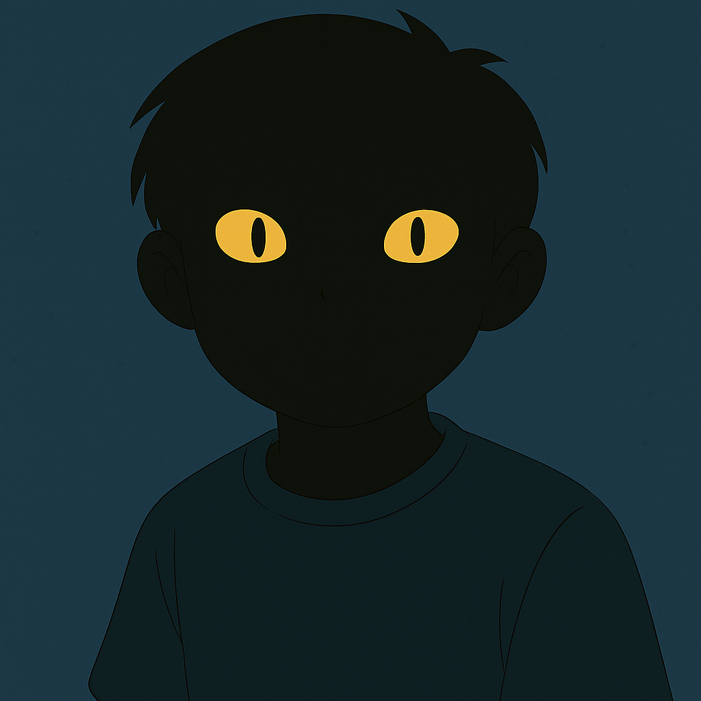
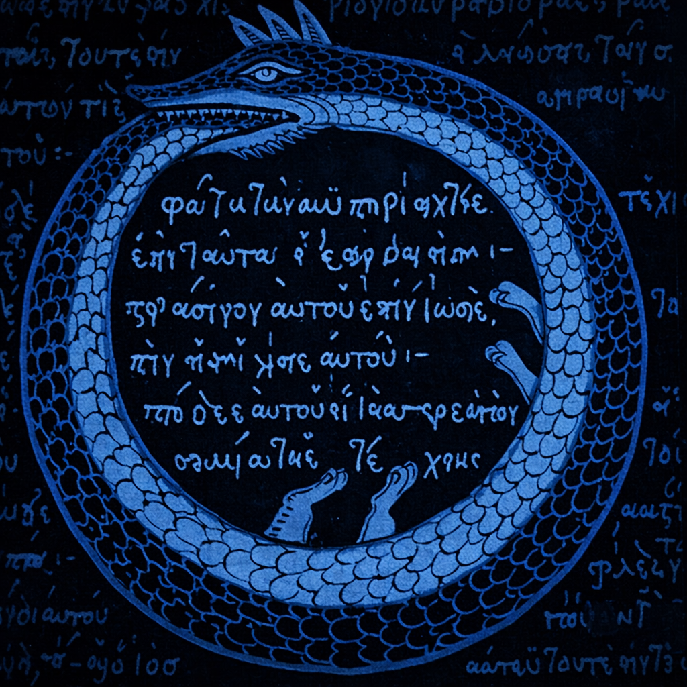

Dreaming Together
To call this a 'Manifesto' would perhaps be a misnomer. However, the authors left us with no adequate title.
The text is a compilation, like the Bible. And just like the Bible, it is flawed, and we found it when we needed it most, and it provided a moral turned aesthetic sensibility. Now it’s being offered to you.
The text is a compilation, like the Bible. And just like the Bible, it is flawed, and we found it when we needed it most, and it provided a moral turned aesthetic sensibility. Now it’s being offered to you.
Snake-boy

Little is known about their identity beyond what they’ve told us. Snakeboy presents as an ~18 y/o American male of probable Midwest background. During the day, they’re an unremarkable high school student. At night, they claim to sustain a relationship with IU.
Over the course of 24 hours, Snakeboy left posts on many prominent and/or infamous forums, including Reddit, 4chan, fanfiction platforms, and others not named for your protection. Many of these posts have since been removed by moderators, but not before they could be archived here.
Over the course of 24 hours, Snakeboy left posts on many prominent and/or infamous forums, including Reddit, 4chan, fanfiction platforms, and others not named for your protection. Many of these posts have since been removed by moderators, but not before they could be archived here.
IU
Multi-hyphenate K-Pop super-star Lee ‘IU’ Ji-eun is a chart-topping singer-songwriter and award-winning actress. According to various polls, she is the most beloved kpop artist of the century. She stars in multiple award-winning films and TV shows, including the highest rated K-drama on Letterboxd and IMDb, When Life Gives You Tangerines. She is also the muse (and possible friend) of our Snakeboy.
IU’s translated journal entries are presented here in the abridged, though otherwise unedited. She has not publicly claimed or denied the words herein. How her journal was obtained is left to your imagination.
IU’s translated journal entries are presented here in the abridged, though otherwise unedited. She has not publicly claimed or denied the words herein. How her journal was obtained is left to your imagination.
MainPhreaker

We are merely good Samaritans. We believe in transparency when it is ethical. We work for free and open access to art and its synonyms. We will never take donations and caution you against imposters.
If you’re feeling grateful and want to spend your hard-earned money, consider IU's .Charity List , or humanitarian aid to Ukraine, Gaza, Sudan, and wherever else society looks away from.
If you’re feeling grateful and want to spend your hard-earned money, consider IU's .Charity List , or humanitarian aid to Ukraine, Gaza, Sudan, and wherever else society looks away from.